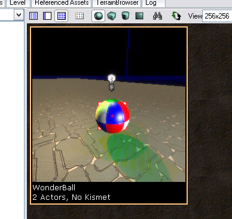
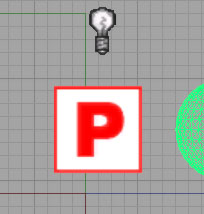
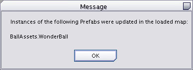
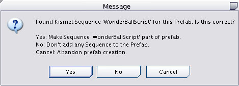

UDN
Search public documentation:
UsingPrefabsJP
English Translation
中国翻译
한국어
Interested in the Unreal Engine?
Visit the Unreal Technology site.
Looking for jobs and company info?
Check out the Epic games site.
Questions about support via UDN?
Contact the UDN Staff
中国翻译
한국어
Interested in the Unreal Engine?
Visit the Unreal Technology site.
Looking for jobs and company info?
Check out the Epic games site.
Questions about support via UDN?
Contact the UDN Staff
Prefab を使う
ドキュメントの概要: Unreal の Prefab システムに関するガイド。 ドキュメントの変更ログ: James Golding により作成。 Richard Nalezynski? により管理。概要
Prefab とは、関連付けたスクリプトを持つアクタのコレクションで、パッケージに保存、レベル内にインスタンス化することが可能です。 レベルを構成していると、アクタを調整して、そのコレクションを同じレベルや他のレベルで再利用したいことが頻繁にあります。例として火の点いたトーチがあります。これは静的メッシュ、光、およびパーティクルシステムで構成されています。Prefab ではこのようなコレクションを一度作成すると、それを Prefab としてパッケージに保存することができます。こうすると、 Generic ブラウザ で Prefab を選択して、そのコレクションを何度でもレベルに追加することができます。 UnrealEngine 3 における Prefab の強力な機能の一つは、いつでも Prefab に戻りそれを更新できることです。ここで加えた変更は、その Prefab の全インスタンスに伝播されます。これは Unrealのプロパティシステムを使うため、Prefab が変更を受けると、Prefab のインスタンスでまだ変更されていないプロパティだけが更新されます。たとえば、黄色のライトをもった Prefab があるとします、Prefab のあるインスタンスにブルーのライトを持たせます。その後で Prefab 自身にはグリーンのライトに変更します。ここで依然黄色のライトを持っているインスタンスだけがグリーンに変わります。これは非常に便利で、Prefab インスタンスの一部だけを特定の用途に合わせて修正、さらには削除することができます。また一方で Prefab に対する更新を受けることもできます。 Prefab は Kismet シーケンスもサポートします。上記の例では、特定の武器でトーチを打ったときに、光が消える Kismet スクリプトを追加したいでしょう。これは Kismet の関連シーケンスの複製を一つ一つ作成し、すべてのアクタを連結する、手作業では非常に時間の掛かる作業です。しかし Prefab では実に簡単に実現できます。Prefab の作成
新規の Prefab を作成するには、まずアクタを好きなようにレベルに取り付けます。すべてのアクタを選択し、右クリックし、コンテキストメニューから "Create Prefab" (Prefab の新規作成) を選びます。新しい Prefab のパッケージ名、オプションでグループ名、が要求されます。それから、選択したアクタを新しい Prefab のインスタンスとを置換したいか質問されます。選択された中で最も大きいアクタの原点が新しい Prefab の原点として選択されます。 これで Generic ブラウザ には新しい Prefab が表示されます。Prefab は作成されると、レベルの Prefab を示すサムネイルを表示します。これは Prefab を作成したときのperspective エディタ ビューポートカメラの位置から撮影したものです。よって、Prefab を作成する前に、良いオブジェクトの姿を捉えておくことは良いことです。
Prefab インスタンスの設置
Prefab のインスタンスを設置するには、 ブラウザ で選択し、レベルを右クリックし、 "Add Prefab" (Prefab の追加):
このインスタンス(そのアクタもPrefab の一部です）に使用した Prefab を追跡するために使用します。 Prefab を作成する場合、Prefab 内のアクタ同士の参照は完全に保護されます。したがって、あるアクタが Prefab 内の別のアクタに関連付けられている場合、その関係は Prefab を設置するごとに正しく扱われます。ただし、Prefab _外の_ アクタへの参照はクリアされます。Prefab のアップデート
Prefab を変更するには、Prefab を作成後、そのインスタンスを修正し、PrefabInstance を右クリックし、"Update Prefab
Prefab に Kismet シーケンスを追加
Prefab には Kismet スクリプトと共にアクタのコレクションを含めることができます。Prefab を作成または更新した場合、レベルシーケンスを検索し、Prefab 内でアクタの参照があるかどうか確認します。もし1件でも検出されれば、すべてを含むヒエラルキーで「最も高位」のシーケンスを捜し、それがこのPrefab で使用する正しいシーケンスか質問します:
ここで「Yes」と答えると、このシーケンス内で、Prefab にはない、アクタへの参照がないか追加のチェックを実行します。そのような参照があった場合は、警告を表示し、シーケンスをます Prefab に含めません。 レベル内に Kismet シーケンスを含む Prefab を設置するとき、 Kismet シーケンスを「Prefabs」というトップレベルのサブシーケンスにインスタンス化します。レベル内のPrefab の各インスタンスには、 Kismet シーケンスに関連付けた自分自身の複製があります。Prefab を更新すると、各インスタンスの Kismet シーケンスは Prefab から完全に置き換えられます、したがって Kismet シーケンスをインスタンス化前に、カスタマイズすることは不可能です。しかし、入力、出力、変数コネクタを Prefab Kismet シーケンスに追加することは可能です。この方法で、機能を Level Designers(レベルデザイナー)に公開することができます。ドアをロックしたり、開けたりする入力をシーケンスが公開し、出力はドアが開くたびに起動するドア Prefab などが、この例です。Prefab についてのヒント
- Prefab インスタンスの一部であるアクタを選択した場合、[Shift-P] を押してそのインスタンスの一部であるアクタすべてを選択することができます。これは、コンテキストメニューからオプション "Select All Actors In Prefab(s)" (Prefab のアクタをすべて選択) を選択することでもできます。
- Prefab に対する変更がそれ以上インスタンスに影響しないように、Prefab のインスタンスを標準のアクタに戻したい場合は、コンテキストメニューから "[Convert PrefabInstance To Normal Actors" (Prefab インスタンスを標準のアクタに変換) を選択します。
- PrefabInstance を選択すると、"Open Sequence For PrefabInstance In Kismet" (KismetのPrefab インスタンスのシーケンスを開く) を選んで、 Kismet を開き、そのインスタンスのサブシーケンスに直接ジャンプすることができます。
- Prefab のインスタンスを完全にリセットするには (すなわち、全アクタを削除し、新規のインスタンスを配置し直す)、PrefabInstance を右クリックして "Reset Instance From Prefab
" (Prefab のインスタンスをリセット)を選択します。